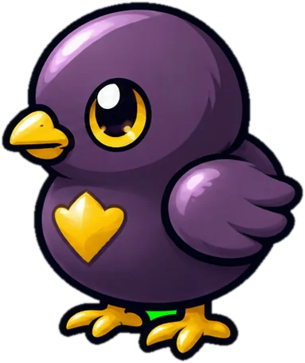

 Wind
WindTap a stage to read its story.
Corvchick is a small, stubby-winged crow-chick with deep purple-black plumage and amber eyes that hold a curious, old-soul quality for such a small creature. It hatches in the Shadow Caves' upper vaults where thin air-shafts bring in just enough wind to hear, and it practices its call into the dark constantly, listening for which cavern returns the best echo. The echo it receives changes slightly each time it calls - shadow-cave children say it is hearing the answers to questions it hasn't asked yet.
Field note: The echo that returns to a Corvchick in Shadow Caves always sounds slightly different from the call it sent - no one has explained why.
Shadow Caves. Corvchick and its family are found in the Shadow Caves. See everyone who lives there.
Share a Bond Food that matches its types to become friends. Corvchick loves:
A Bond Food is not a trick. It joins your spirit with the Kimuro's spirit, and only when it chooses you.
Print the Kimuro adventure packs: mazes, cards, a board game and Bond Mark medals.
See the printable packs